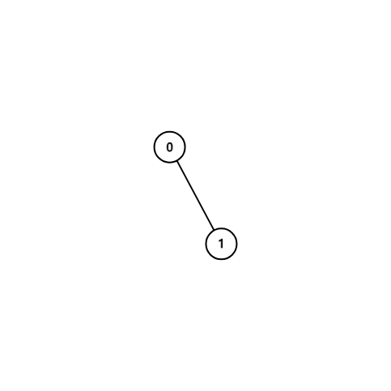
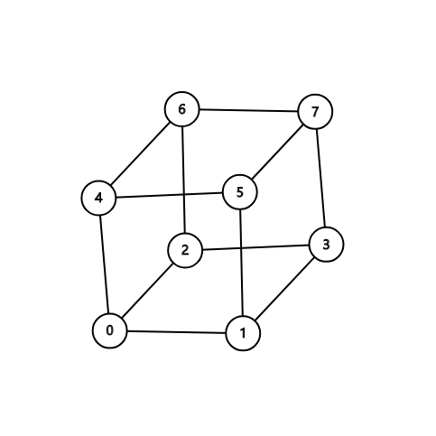
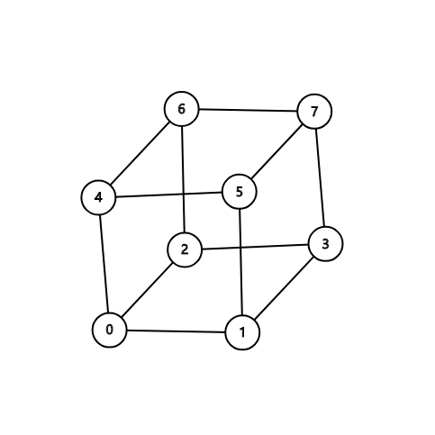

Overview
| Status | A | B | C | D | E | F |
|---|---|---|---|---|---|---|
| Contest | 00:05 | 00:17 | —— | —— | —— | —— |
| Upsolve | OK | OK | AC | AC | ||
| Attempt | + | + | *2 | * | ||
| AC count | 1536 | 993 | 246 | 54 | 9 | 5 |
- Rank 358 out of 1925, performance 2020
- Rating 820, became Pupil
- 比赛中卡在 C 题上了，和cyy想出了做法，可是比赛中没来得及写完，挺可惜的
- C题是挺有趣的一道构造题，相当于是超立方体中询问任意两点是否存在哈密尔顿路径。
- D题是类似于斐波那契数列的置换序列，找到规律之后其实挺简单的，感觉可能有更高深的知识背景
nocriz 太强了！过了 C 题，Rank 167
[TODO: solve Problem E]
Prob A. 签到
答案就是 (每种字母出现次数+1) 乘起来，然后再减一。
1 |
|
Prob B. 简单dp
首先，我们把字符串中连续相同字母缩成一个，即把 “aaaabbaaaaa” 缩成 “aba”，这样相邻字母就互不相同了。
考虑 $dp[r]$ 表示子串 $s[1,r]$ 的答案，我们只需要枚举最后一个字母 $s[r]$ 的选择。有两种转移：
- $s[r]$ 不参与染色，那么贡献是 $dp[r-1]$
- $s[r]$ 与 $sc$ 同色，染好之后，只需要染前面 $s[1,c-1]$ 这个子串，贡献就是 $dp[c-1]$
把每种颜色的贡献用数组存起来就可以 $O(1)$ 完成转移了。
1 |
|
Prob C. 构造，格雷码，好题
Description
给出 $n, A, B$ 三个数，问存不存在 $0,1,\cdots,2^n-1$ 的一个排列 $p$ ，使得：
- $p_0=A$ ，即第一项是A。
- $p_{2^n-1} = B$，即第二项是B。
- $\text{popcount}(p_i \oplus p_{i+1}) = 1, \forall i \in [0,2^n-1)$ ，即相邻两个数二进制表示只差一位。
Solution
这道题感觉结论还是挺吸引人的，构造方法是不太寻常的归纳，用到了格雷码的相关知识，而且它还有超立方体哈密尔顿路径的构造这么一个非常有趣的背景，是一道挺不错的题目。
超立方体哈密尔顿路径
首先讲一下这个问题和超立方体哈密尔顿路径的关系，虽然这一点在解决这道题中倒是没有起到太大的作用。
如果仔细观察题中所说的由 $0,1,2,\cdots,2^n-1$ 作为顶点，二进制表示仅仅相差以为的两个数连边，这样构成的图其实就是超立方体。构造方式是这样的：
- 零维立方体是一个孤立的点
- $k+1$ 维立方体是这样构造的：
- 首先，画出两个 $k$ 维立方体
- 然后，将这两个 $k$ 维立方体对应顶点连上线即可。
 

于是，问题就化成了从超立方体顶点 $A$ 走到顶点 $B$，存不存在一条哈密尔顿路径，如果存在就请构造出来。对于这个问题，说不定一些启发式算法可以通过？
一种构造
首先，我们只需要考虑从 $0$ 走到 $A\oplus B$ 的情况，而中间会经过 $2^n-1$ 次某个二进制位翻转的操作，因此 $A\oplus B$ 的二进制位数为偶数时，答案一定是不可以。那么为奇数时，是否就一定可以了呢？
事实上，确实是这样的。
Gray 函数
我们首先描述一种 $A=\underbrace{000\cdots 0}_{k\text{ zeros}}$ , $B=1\underbrace{00\cdots 0} _ {k-1 \text{ zeros}}$ 的不重不漏的构造，这种构造使用了数学归纳法，本质上就是格雷码的构造过程：
- 首先，根据归纳假设，我们选定后 $k-1$ 位，可以将 $000\cdots 0$ 变为 $010\cdots 0$ ；
- 然后，我们把第一位改变，即：变为 $110\cdots 0$
- 再之后，我们再选定后 $k-1$ 位，使用和第一步完全一样的翻转方法，即可得到 $100\cdots 0$ ，可以发现，在整个过程中，每一个数都已经出现过了。
硬核构造
下面的构造就比较硬核了，很多步骤相互嵌套，但是规模在逐步缩小，因此是正确的。
我们上面现在解决了 $A$与 $B$ 相差1位的情形，要解决一般的情形，即：
$$
A=\underbrace{000\cdots 0} _ {k\text{ zeros}}, B=\underbrace{111\cdots1} _ {m\text{ ones}} \underbrace{000\cdots 0} _ {k-m \text{ zeros}}
$$
我们将其记为：mono(ones, zeros)
首先，我们声称，解决从 $\underbrace{000\cdots 0} _ {m\text{ zeros}}$ 到 $\underbrace{111\cdots 1} _ {m\text{ ones}}$ 的问题即可完成上述过程。我们这么进行操作：假如我们已经有一个操作序列 $op_1,op_2,\cdots,op_{2^m-1}$ 能够完成从全0到全1的变化，那么在每进行一次操作 $op_i$ 之后，我们都跑一遍后 $k-m$ 位的格雷码，将其第一位修改，后 $k-m-1$ 位不变。经过这样的操作，如果前面全0到全1能够遍历前k位所有可能情况，那么后面的格雷码操作将可以保证我们总的方案是正确的。
第二步就是解决从 $\underbrace{000\cdots 0} _ {m\text{ zeros}}$ 到 $\underbrace{111\cdots 1} _ {m\text{ ones}}$ 的过程。
- 我们先将其后 $m-1$ 位跑一遍格雷码，变成 $010\cdots 0$
- 然后把第一位改变，变为 $110\cdots 0$
- 这一步，我们对后面的 $m-1$ 位递归调用
mono(m-2, 1)，使得后 $m-2$ 位改变，而第2位不变，并且遍历完后 $m-1$ 位的所有情况。这样，我们就完成了总的构造。
Code
1 |
|
Prob D. 置换，找规律
Description
给你一个置换序列的前两项 $a_1=p,a_2=q$ ，之后的置换这么定义：
记第 $a_k$ 个置换的之前的 $a_{k-2}=m,a_{k-1}=n$ ，则 $a_k$ 的第 $m[i]$ 项 $a_k[m[i]] = n[i]$
之后询问第 $q$ 个置换是多少。
Solution
这道题蛮乱搞的，写出前10项左右可以发现规律，然后就没了。规律在代码中写得很明确。
Code
1 |
|